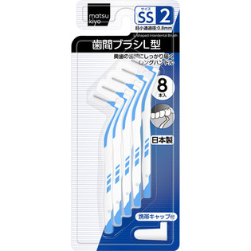

返回列表
产品名称：matsukiyo 歯間ブラシL型 サイズ2（SS）

毅・インエグゼサプライ matsukiyo 歯間ブラシL型 サイズ2（SS） ８本
メーカー 毅・インエグゼサプライ
JANコード 4538604523329
商品の特徴
奥歯の歯間にしっかり届くロングハンドル
最小通過径：0.8mm
・歯ブラシでは落としにくい歯と歯の間歯垢をしっかり除去します。
・L字型のながいハンドルで奥歯の歯間もしっかりケアできます。
成分・分量
用法及び用量